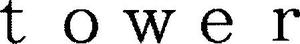

Trade Mark Journal No.2025/017 25 April 2025
WO0000001841160 (20,21)
Office of origin: Japan
Date of International Registration:11 October 2024
Date of designation in the UK:
11 October 2024

- Class 20
- Cushions; Japanese floor cushions [zabuton]; pillows; mattresses; step ladders and ladders, not of metal; furniture; hat hooks, not of metal; hand-held supermarket shopping baskets, not of metal; hanging boards [Japanese style pegboards using positional hooks]; wine racks; kitchen racks; benches; storage racks specially made for cleaning instruments and adapted to be mounted on other objects; bathroom stools; racks for bottles for use in kitchen.
- Class 21
- Cosmetic utensils, other than electric toothbrushes; electric toothbrushes; kitchen utensils and containers, other than gas water heaters for household use, non-electric cooking heaters for household purposes, kitchen sinks incorporating integrated worktops for household purposes and kitchen sinks for household purposes; cleaning instruments and washing utensils; ironing boards; tailors' sprayers; kotedai [Japanese-style ironing boards]; hera-dai [fabric marking boards]; yukakibo [Japanese bath utensils for stirring hot bathtub water]; bathroom pails; flower pots; hydroponic plant pots for home gardening; watering cans; countertop holders of metal for paper towels; soap dispensers; wine holders; hanging kitchen utensil holders; holders for kitchen paper towels; stands for kitchen knives and cutting boards for use in kitchen; sponge holders for use in kitchen; dish drying racks, spice racks, toast racks and cooling racks for use in kitchen; coin banks; toilet paper holders; vases; flower bowls; toothbrush stands; stands for toothbrushes and cups for use in bathrooms or washrooms; holders for dispenser bottles for shampoos, hair conditioners and soaps; shampoo racks for use in bathrooms; bathroom bottle racks; towel racks [bathroom fixtures]; soap dishes; hair conditioner dispensers; shampoo dispensers; shoe brushes; shoe horns; shoe shine cloths; shoe polishing sponges and cloths; shoe trees; rails, rings and bars for towels for use in bathrooms; rails, rings and bars for bath towels; rails, rings and bars for towels; cups for use in bathrooms or washrooms; toilet paper storage cases; unworked or semi-worked glass, not for building; gloves for household purposes; candle extinguishers; candle holders; mouse and rat traps; fly swatters; bird cages; bird baths; feeding vessels for pets; brushes for pets; chamber pots; chemically activated packs for heating food and beverages; chemically activated packs for cooling food and beverages; incense burners, non-electric.
YAMAZAKI CO., LTD.
Representative: Mathys & Squire LLP, Abbey House, 32 Booth Street Manchester M2 4AB UNITED KINGDOM